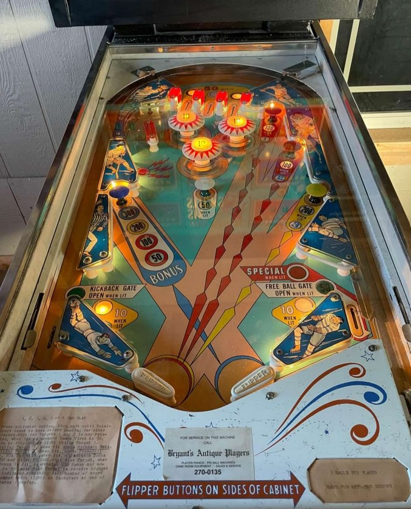

The top lanes and the center white mushroom bumper score 10 points, or 50 when lit. Either the left and right top lanes will be lit, or the center top lane and white mushroom bumper will be lit. Which pair of features is lit alternates whenever a switch that scores 50 points or more is hit.
The blue mushroom bumper scores 10 points when completely unlit. The three mushroom bumpers on the right score 50 points when not lit; the red bumpers score 100 when lit and the yellow bumper scores 200 when lit. At the start of each ball, the red mushroom bumpers are lit. The top mushroom bumper, labelled with #1, activates the kickback in the left out lane, which sends the ball all the way to the top of the table. The lower red mushroom bumper, labelled with #2, opens the free ball gate in the right out lane. Collecting either #1 or #2 but not both increases the value of the blue mushroom bumper to 50 points. Collecting both #1 and #2 increases the value of the blue mushroom bumper to 100 points and lights the yellow mushroom bumper. Hitting the yellow mushroom bumper when lit scores 200 points, advances the blue mushroom's value to 200 points, closes the free ball gate in the right out lane, and lights the right out lane for Special instead. When the blue bumper is lit for 200 points, hitting it will score the 200 and increase its value to the maximum of 300 points.
Using the kickback in the left out lane does not unlight any features; however, draining the ball or using the free ball gate in the right out lane will reset all mushroom bumper progress, which includes unlighting the kickback, closing the free ball gate, removing the collected 1-2-3 numbers, and resetting the blue mushroom's value back to 10 points (completely unlit).
Pop bumpers and slingshots score 1 point, or 10 points when lit. They are lit intermittently and seemingly randomly based on 1-point switch hits. While I have not confirmed this, this behavior is likely due to the use of a dynamic difficulty system seen in other mid-1960s Bally games, where earning free games increases the game's difficulty, and ending a game slightly lowers the difficulty; the lower the difficulty is, the more frequently the pop bumpers and slingshots are lit, allowing for higher scores.
The rollover button in the upper left lane fires a kicker in the left wall when pressed, launching the ball directly at the lower pop bumper.
There are no in lanes. 2-inch mini flippers back up directly to the slingshots. Out lanes score 10 points. The left out lane is lit for a kickback whenever #1 has been collected. When #2 is collected but not #3, the right out lane is lit for 50 points, and a gate opens that redirects the ball back to the shooter lane for a replunge and resets the mushroom bumper sequence. Collecting 1-2-3 closes the right out lane gate and decreases its value from 50 points back to 10, but lights the out lane for Special.
There is no end of ball bonus or extra ball feature. I have not confirmed the tilt penalty, but I would expect a tilt to disqualify the ball in play only.
The below picture of Six Sticks' playfield can be found on Pinside.
